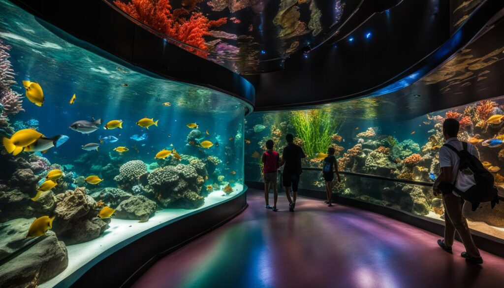

Activities
Create an unforgettable experience with fascinating scenery at Finfinity
Aquarium. Get up close to Encounter African Penguins, marvel at the agility
on display during The Dolphin Show, or join our Interactive Feeding Sessions
to be part of daily dietary routines with our expert caretakers.
Plunge straight into the action with our Scuba Diving Experience, test your
courage by Snorkelling with Sharks in an exhilarating environment, or pull
back the curtain with an exclusive Behind the Scenes Tour to explore the
conservation efforts that make our aquarium a true sanctuary.


Encounter African Penguins
African Penguins are actually known as "Jackass Penguins" because their call sounds incredibly similar to a donkey braying! Unlike arctic penguins, these little guys are adapted to warmer climates and love nesting in burrows under coastal bushes.

The Dolphin Show
Did you know they have unique "signature whistles"? Every dolphin develops its own specific whistle early in life, which acts like a name so other dolphins can call out to them individually. They are essentially masters of underwater communication!

Discover Scuba Diving Experience
The first time you breathe underwater, you will realize that the ocean is much quieter than you think. It is actually filled with a symphony of clicks, pops, and rustles from crustaceans and fish.

Interactive Feeding Sessions
Join our expert aquarists to help distribute specialized, nutrient-rich snacks to our friendly inhabitants. You'll learn the secrets of species-specific diets while experiencing the thrill of a hungry school of fish gathering right at your fingertips.

Behind the Scenes Tour
What you see in the exhibits is only 20% of the aquarium! This tour takes you to our massive "Life Support Systems." These systems include giant protein skimmers that work like high-tech filters to remove waste, ensuring our water quality is often cleaner than natural seawater.

Snorkelling with Sharks
Despite their fearsome reputation, most shark species found in managed encounters are curious rather than aggressive. Sharks are also "living fossils"—they have been around for over 400 million years, meaning they survived the mass extinction that wiped out the dinosaurs!

Scuba Diving School
Create an unforgettable adventure and learn to breathe underwater with
our certified team at the Finfinity Scuba Diving School. Whether you are
taking your very first breaths in the safety of our controlled training pool
or aiming to complete your international PADI certification, our professional
instructors guide you safely through every step. You will gain foundational
skills, master equipment handling, and build the ultimate confidence needed
to explore open waters.
The highlight of our academy is the unparalleled opportunity to take your
training beneath the surface of our premier ocean exhibits. Imagine practicing
your buoyancy alongside magnificent rays, sea turtles, and vibrant schools
of fish. It is an immersive and educational experience that transforms
scuba lessons into a lifelong passion for marine exploration and ocean conservation.

Membership
Become a vital part of the Finfinity family by joining our annual membership
program and enjoying unlimited access to the ocean's wonders all year round.
Perfect for families, ocean enthusiasts, and frequent visitors, a membership
allows you to step into our underwater realm whenever you please without waiting
in general admission lines. It is your ultimate passport to regular coastal
escapes right in the heart of the city.
Beyond unlimited entry, members unlock a treasure trove of exclusive perks,
including steep discounts on special activities like shark snorkeling,
priority booking for the Dive School, and invitations to private, member-only
evening events. Best of all, your membership directly funds our core wildlife
rescue operations and marine conservation initiatives, meaning your support
helps protect the very oceans you love to explore.